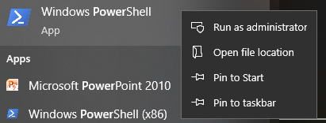

Bemerkung
Hallo und willkommen in der SunFounder Raspberry Pi & Arduino & ESP32 Enthusiasten-Gemeinschaft auf Facebook! Tauchen Sie tiefer ein in die Welt von Raspberry Pi, Arduino und ESP32 mit anderen Enthusiasten.
Warum beitreten?
Expertenunterstützung: Lösen Sie Nachverkaufsprobleme und technische Herausforderungen mit Hilfe unserer Gemeinschaft und unseres Teams.
Lernen & Teilen: Tauschen Sie Tipps und Anleitungen aus, um Ihre Fähigkeiten zu verbessern.
Exklusive Vorschauen: Erhalten Sie frühzeitigen Zugang zu neuen Produktankündigungen und exklusiven Einblicken.
Spezialrabatte: Genießen Sie exklusive Rabatte auf unsere neuesten Produkte.
Festliche Aktionen und Gewinnspiele: Nehmen Sie an Gewinnspielen und Feiertagsaktionen teil.
üëâ Sind Sie bereit, mit uns zu erkunden und zu erschaffen? Klicken Sie auf [hier] und treten Sie heute bei!
OpenSSH über PowerShell installieren
Wenn Sie ssh <benutzername>@<hostname>.local (oder ssh <benutzername>@<IP-Adresse>) verwenden, um eine Verbindung zu Ihrem Raspberry Pi herzustellen, und die folgende Fehlermeldung erscheint:
ssh: Der Begriff 'ssh' ist nicht als Name eines Cmdlet, einer Funktion, einer Skriptdatei oder eines ausführbaren Programms erkannt. Überprüfen Sie die Schreibweise des Namens oder ob der Pfad korrekt ist, und versuchen Sie es erneut.
bedeutet dies, dass Ihr Computersystem zu alt ist und OpenSSH nicht vorinstalliert ist. Befolgen Sie daher das untenstehende Tutorial, um es manuell zu installieren.
Geben Sie
powershellin das Suchfeld Ihres Windows-Desktops ein, klicken Sie mit der rechten Maustaste aufWindows PowerShellund wählen Sie im erscheinenden Menü die OptionAls Administrator ausführen.Verwenden Sie den folgenden Befehl, um
OpenSSH.Clientzu installieren.Add-WindowsCapability -Online -Name OpenSSH.Client~~~~0.0.1.0
Nach der Installation wird die folgende Ausgabe angezeigt.
Path : Online : True RestartNeeded : False
Überprüfen Sie die Installation mit dem folgenden Befehl.
Get-WindowsCapability -Online | Where-Object Name -like 'OpenSSH*'
Es wird nun angezeigt, dass
OpenSSH.Clienterfolgreich installiert wurde.Name : OpenSSH.Client~~~~0.0.1.0 State : Installed Name : OpenSSH.Server~~~~0.0.1.0 State : NotPresent
Warnung
Wenn die obige Meldung nicht angezeigt wird, bedeutet dies, dass Ihr Windows-System immer noch zu alt ist. In diesem Fall wird empfohlen, ein Drittanbieter-SSH-Tool zu installieren, wie unter PuTTY.
Starten Sie PowerShell neu und führen Sie es weiterhin als Administrator aus. Nun können Sie sich mit dem Befehl
sshauf Ihrem Raspberry Pi anmelden; Sie werden aufgefordert, das zuvor festgelegte Passwort einzugeben.